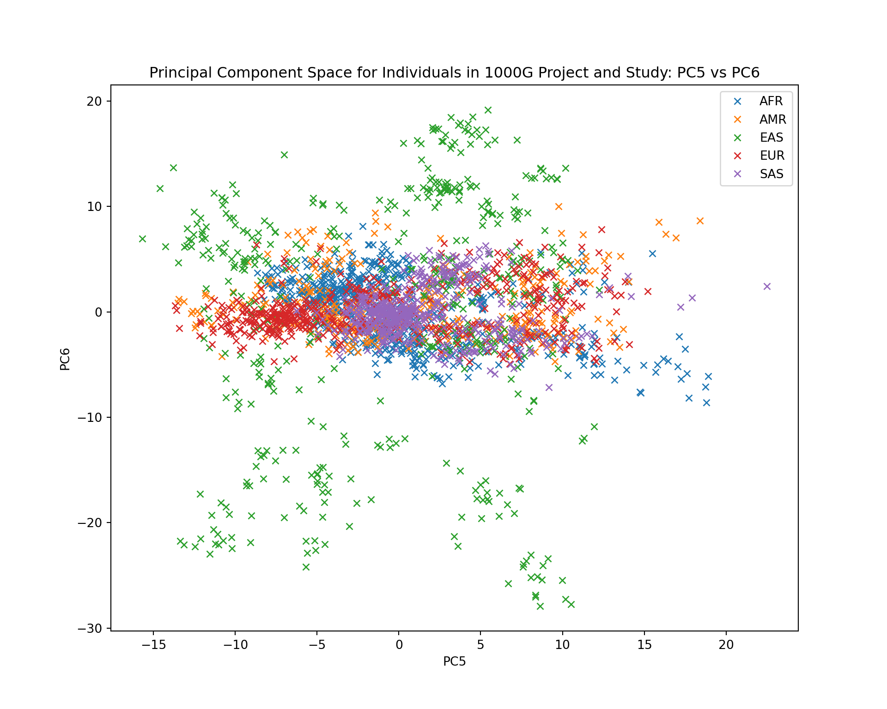

conda activate hpdm208z1 Introduction
In the previous workshop, we introduced PLINK to process genetic data for the purposes of data conversion, calculations, filtering, and running a genetic association study of a binary outcome. In this workshop, you will take a deeper dive into performing genetic association testing of common human traits, meta-analysis of results, and accounting for potential confounding caused by differences in genetic ancestry of individuals in a data set.
2 Aims of workshop
- reinforce the concepts of genetic associations in the context of common disease, as covered in this week’s lecture
- apply regression-based models for association testing
- perform meta-analysis of results across multiple studies
- highlight the issue of including individuals of different genetic ancestry in genetic association analysis
- perform principal component analysis (PCA) using genetics to separate out individuals based on genetic ancestry
- apply clustering methods to group individuals of similar characteristics together and label their ancestry
- adjust for presence of population stratification in GWAS
- understand the limitations of data commonly used for genome-wide associations
3 Conda environment
Before attempting this workshop, you should activate the hpdm208z conda environment that will provide the R through Jupyter Lab and required library dependencies:
4 Workshop directory
All relevant files associated with this workshops can be found in the following directory:
/home/ubuntu/hpdm208z/workshops/gwas/You should navigate to this directory prior to starting the workshop. Note, a jupyter notebook can be be loaded from this directory to assist you in undertaking this workshop:
gwas.ipynb5 Workshop data and files
Below is a table describing the files in the ~/hpdm208z/workshops/gwas/ directory:
| File Name | Description |
|---|---|
height_study1.[bed|bim|fam] |
Genetic data on 10,000 SNPs in 10,000 individuals. Height (cm) in .fam file |
height_study1.covar |
Data on sex and age recorded at study enrollment |
height_study2.[bed|bim|fam] |
Genetic data on 10,000 SNPs in 10,000 individuals. Height (cm) in .fam file |
height_study2.covar |
Data on sex and age recorded at study enrollment |
METAANALYZE.py |
Python script for meta-analysis of GWAS statistics from multiple studies |
ref_samples_for_pca.txt |
100,000 SNP genotypes for 1,223 individuals & PCA analysis |
study_samples_for_pca.txt |
100,000 SNP genotypes for 1,222 individuals & PCA analysis |
world_cup_fans.[bed|bim|fam] |
40,938 SNP genotypes with MAF >5% for 1,222 individuals & GWAS |
6 Running a GWAS for adult human height
We will first use PLINK to perform basic association testing of genetic variants against a continuous phenotype (adult height) while adjusting for covariates that can influence the outcome (age and sex).
We will ask PLINK to perform a linear-regression based analyses for each genetic variant. We will require the following options:
--bfile- file prefix of the .bed .bim .fam files containing data on genotypes. The phenotype is held in the last column of the .fam file--linear hide-covar- specifies we want to run a linear regression model.hide-covartells plink not to output the association results for the covariates - only the genetic variant for each model.--covar- name of file containing data on covariates (age and sex) for each individual--out- specifies the primary name of the output file.
Run the following command:
~/hpdm208z/programs/plink \
--bfile height_study1 \
--linear hide-covar \
--covar height_study1.covar \
--out height_study1_gwasUsing the command above, PLINK will generate an output file called height_study1_gwas.assoc.linear. Let’s take a look at it:
head height_study1_gwas.assoc.linear CHR SNP BP A1 TEST NMISS BETA STAT P
1 1:1001000 1001000 C ADD 10000 -0.7364 -1.249 0.2116
1 1:1003000 1003000 C ADD 10000 0.882 1.604 0.1088
1 1:1005000 1005000 G ADD 10000 -0.01133 -0.02728 0.9782
1 1:1007000 1007000 G ADD 10000 -0.1459 -0.7232 0.4696
1 1:1009000 1009000 A ADD 10000 0.4892 0.8272 0.4081
1 1:1011000 1011000 G ADD 10000 -0.298 -1.821 0.06858
1 1:1013000 1013000 G ADD 10000 -0.08145 -0.6061 0.5444
1 1:1015000 1015000 T ADD 10000 0.07354 0.1666 0.8676
1 1:1017000 1017000 A ADD 10000 -0.05728 -0.3473 0.7284Here is a table that describes the columns in the output
| Column | Description |
|---|---|
CHR |
From .bim file - chromosome genetic variant resids on |
SNP |
From .bim file - unique name of genetic variant |
BP |
From .bim file - base-pair position genetic variant found |
A1 |
From .bim file - allele assigned A1 (usually minor allele) the BETA corresponds to |
TEST |
Describes model assumption - ADD = additive model of association |
NMISS |
Number of individuals that went into the analysis as not missing data |
BETA |
The effect of carrying each additional A1 allele on the outcome |
STAT |
Z-statistic calculed as BETA / standard error (not shown) used to obtain P-value |
P |
P-value indicating strength of statistical significance of estimated effect |
6.1 Task
- Use PLINK to perform a GWAS analysis using the
height_study2.[bed|bim|fam]andheight_study1.covar. Output the results to a file calledheight_study2_gwas.assoc.linear.
7 Preparing results for meta-analysis
Next, we will attempt to double our effective sample size to 20,000 individuals by meta-analysing these two result sets together using a fixed-effects inverse-variance weighted model. A python script has been created for you to perform the meta-analysis of the results from the two studies.
By fixed-effects we just mean that there is only one true effect for a given genetic variant on the phenotypic outcome and differences in effects observed across different studies is due to random sampling of individuals that went into the association analyses.
By inverse-variance weighted we just mean that when we combine studies together, we will give more weighting to larger studies when combining the association statistics for a given genetic variant to calculate an overall statistic. See this week’s notes to remind yourself of how this works.
7.1 Ensuring we know which is the effect allele
However, before we run the Python script you will notice that the output only contains information for 1 of the alleles (A1). The output does not contain the other allele. We need to make sure the alleles are coded the same way across the two studies and potentially account for A1 to be different across the two studies that may result in both an effect with the same magnitude of effect but with different signs of direction of effect (i.e. a positive beta in one study and a negative beta in the other).
Let’s quickly wrangle the data so we are ready to do the meta-analysis.
# Import pandas library
import pandas as pd
import numpy as np
import matplotlib.pyplot as plt
from sklearn.decomposition import PCA
pd.set_option('display.max_columns', None)# Read GWAS data for study1 into a pandas df
study1_height_gwas = pd.read_csv("height_study1_gwas.assoc.linear", sep="\s+")
# Rename "A1" as "EFFECT_ALLELE"
study1_height_gwas.rename(columns={"A1": "EFFECT_ALLELE"}, inplace=True)
# preview
print(study1_height_gwas.head()) CHR SNP BP EFFECT_ALLELE TEST NMISS BETA STAT P
0 1 1:1001000 1001000 C ADD 10000 -0.73640 -1.24900 0.2116
1 1 1:1003000 1003000 C ADD 10000 0.88200 1.60400 0.1088
2 1 1:1005000 1005000 G ADD 10000 -0.01133 -0.02728 0.9782
3 1 1:1007000 1007000 G ADD 10000 -0.14590 -0.72320 0.4696
4 1 1:1009000 1009000 A ADD 10000 0.48920 0.82720 0.4081Now we will load in the alleles from the bim file.
# Load the SNP A1, and A2 columns from the .bim file for study 1 only
study1_bim = pd.read_csv("height_study1.bim", sep="\s+", header=None,
usecols=[1, 4, 5], names=["SNP", "BIM_A1", "BIM_A2"])
# preview
print(study1_bim.head()) SNP BIM_A1 BIM_A2
0 1:1001000 C G
1 1:1003000 C T
2 1:1005000 G T
3 1:1007000 G C
4 1:1009000 A TMerge the GWAS association statistics with the data frame containing the other allele.
study1_merged = pd.merge(study1_bim, study1_height_gwas, on="SNP")
print(study1_merged) SNP BIM_A1 BIM_A2 CHR BP EFFECT_ALLELE TEST NMISS \
0 1:1001000 C G 1 1001000 C ADD 10000
1 1:1003000 C T 1 1003000 C ADD 10000
2 1:1005000 G T 1 1005000 G ADD 10000
3 1:1007000 G C 1 1007000 G ADD 10000
4 1:1009000 A T 1 1009000 A ADD 10000
... ... ... ... ... ... ... ... ...
9995 22:1336000 G T 22 1336000 G ADD 10000
9996 22:1338000 A G 22 1338000 A ADD 10000
9997 22:1340000 C A 22 1340000 C ADD 10000
9998 22:1342000 C A 22 1342000 C ADD 10000
9999 22:1344000 A C 22 1344000 A ADD 10000
BETA STAT P
0 -0.73640 -1.24900 0.21160
1 0.88200 1.60400 0.10880
2 -0.01133 -0.02728 0.97820
3 -0.14590 -0.72320 0.46960
4 0.48920 0.82720 0.40810
... ... ... ...
9995 -0.03786 -0.19500 0.84540
9996 0.34380 1.75400 0.07942
9997 -0.14930 -1.08800 0.27660
9998 -0.17390 -0.73830 0.46040
9999 0.12440 0.95590 0.33920
[10000 rows x 11 columns]Now let’s create a column called OTHER_ALLELE in the GWAS dataset based on EFFECT_ALLELE and two alleles in the .bim file
study1_merged["OTHER_ALLELE"] = np.where(study1_merged["EFFECT_ALLELE"] == study1_merged["BIM_A1"],
study1_merged["BIM_A2"], study1_merged["BIM_A1"])
print(study1_merged) SNP BIM_A1 BIM_A2 CHR BP EFFECT_ALLELE TEST NMISS \
0 1:1001000 C G 1 1001000 C ADD 10000
1 1:1003000 C T 1 1003000 C ADD 10000
2 1:1005000 G T 1 1005000 G ADD 10000
3 1:1007000 G C 1 1007000 G ADD 10000
4 1:1009000 A T 1 1009000 A ADD 10000
... ... ... ... ... ... ... ... ...
9995 22:1336000 G T 22 1336000 G ADD 10000
9996 22:1338000 A G 22 1338000 A ADD 10000
9997 22:1340000 C A 22 1340000 C ADD 10000
9998 22:1342000 C A 22 1342000 C ADD 10000
9999 22:1344000 A C 22 1344000 A ADD 10000
BETA STAT P OTHER_ALLELE
0 -0.73640 -1.24900 0.21160 G
1 0.88200 1.60400 0.10880 T
2 -0.01133 -0.02728 0.97820 T
3 -0.14590 -0.72320 0.46960 C
4 0.48920 0.82720 0.40810 T
... ... ... ... ...
9995 -0.03786 -0.19500 0.84540 T
9996 0.34380 1.75400 0.07942 G
9997 -0.14930 -1.08800 0.27660 A
9998 -0.17390 -0.73830 0.46040 A
9999 0.12440 0.95590 0.33920 C
[10000 rows x 12 columns]Now we have both alleles in the data frame defined as EFFECT_ALLELE and OTHER_ALLELE, lets remove the columns we no longer need: BIM_A1 and BIM_A2, and the move OTHER_ALLELE column next to the EFFECT_ALLELE column in the data frame:
study1_merged = study1_merged.drop(columns=["BIM_A1", "BIM_A2"])
col = study1_merged.pop("OTHER_ALLELE")
study1_merged.insert(4, "OTHER_ALLELE", col)
# preview
print(study1_merged) SNP CHR BP EFFECT_ALLELE OTHER_ALLELE TEST NMISS \
0 1:1001000 1 1001000 C G ADD 10000
1 1:1003000 1 1003000 C T ADD 10000
2 1:1005000 1 1005000 G T ADD 10000
3 1:1007000 1 1007000 G C ADD 10000
4 1:1009000 1 1009000 A T ADD 10000
... ... ... ... ... ... ... ...
9995 22:1336000 22 1336000 G T ADD 10000
9996 22:1338000 22 1338000 A G ADD 10000
9997 22:1340000 22 1340000 C A ADD 10000
9998 22:1342000 22 1342000 C A ADD 10000
9999 22:1344000 22 1344000 A C ADD 10000
BETA STAT P
0 -0.73640 -1.24900 0.21160
1 0.88200 1.60400 0.10880
2 -0.01133 -0.02728 0.97820
3 -0.14590 -0.72320 0.46960
4 0.48920 0.82720 0.40810
... ... ... ...
9995 -0.03786 -0.19500 0.84540
9996 0.34380 1.75400 0.07942
9997 -0.14930 -1.08800 0.27660
9998 -0.17390 -0.73830 0.46040
9999 0.12440 0.95590 0.33920
[10000 rows x 10 columns]7.2 Obtaining the standard error of the effect estimate
As we are going to perform a inverse-variance based meta-analysis, we need to obtain the standard error:
study1_merged["SE"] = round(study1_merged["BETA"] / study1_merged["STAT"], 5)
# Reorder columns so that SE is next to the BETA column
col = study1_merged.pop("SE")
study1_merged.insert(8, "SE", col)
# preview
print(study1_merged) SNP CHR BP EFFECT_ALLELE OTHER_ALLELE TEST NMISS \
0 1:1001000 1 1001000 C G ADD 10000
1 1:1003000 1 1003000 C T ADD 10000
2 1:1005000 1 1005000 G T ADD 10000
3 1:1007000 1 1007000 G C ADD 10000
4 1:1009000 1 1009000 A T ADD 10000
... ... ... ... ... ... ... ...
9995 22:1336000 22 1336000 G T ADD 10000
9996 22:1338000 22 1338000 A G ADD 10000
9997 22:1340000 22 1340000 C A ADD 10000
9998 22:1342000 22 1342000 C A ADD 10000
9999 22:1344000 22 1344000 A C ADD 10000
BETA SE STAT P
0 -0.73640 0.58959 -1.24900 0.21160
1 0.88200 0.54988 1.60400 0.10880
2 -0.01133 0.41532 -0.02728 0.97820
3 -0.14590 0.20174 -0.72320 0.46960
4 0.48920 0.59139 0.82720 0.40810
... ... ... ... ...
9995 -0.03786 0.19415 -0.19500 0.84540
9996 0.34380 0.19601 1.75400 0.07942
9997 -0.14930 0.13722 -1.08800 0.27660
9998 -0.17390 0.23554 -0.73830 0.46040
9999 0.12440 0.13014 0.95590 0.33920
[10000 rows x 11 columns]Now we can export the data for study1 that can be used for meta-analysis:
study1_merged.to_csv("height_study1_gwas.assoc.linear.formatted", sep="\t", index=False)Now we need to do the same for the other GWAS summary file from study2
# Read GWAS data for study1 into a pandas df
study2_height_gwas = pd.read_csv("height_study2_gwas.assoc.linear", sep=r"\s+")
# Rename "A1" as "EFFECT_ALLELE"
study2_height_gwas.rename(columns={"A1": "EFFECT_ALLELE"}, inplace=True)
# Load the SNP and A2 columns from the .bim file for study 1 only
study2_bim = pd.read_csv("height_study2.bim", sep="\s+", header=None,
usecols=[1, 4, 5], names=["SNP", "BIM_A1", "BIM_A2"])
# Merge
study2_merged = pd.merge(study2_bim, study2_height_gwas, on="SNP")
# Create OTHER_ALLELE column
study2_merged["OTHER_ALLELE"] = np.where(study2_merged["EFFECT_ALLELE"] == study2_merged["BIM_A1"],
study2_merged["BIM_A2"], study2_merged["BIM_A1"])
# Drop helper columns
study2_merged = study2_merged.drop(columns=["BIM_A1", "BIM_A2"])
# Move OTHER_ALLELE next to EFFECT_ALLELE in data frame
col = study2_merged.pop("OTHER_ALLELE")
study2_merged.insert(4, "OTHER_ALLELE", col)
# Calculate the SE from the BETA and STAT values
study2_merged["SE"] = round(study2_merged["BETA"] / study2_merged["STAT"], 5)
# Reorder columns so that SE is next to the BETA column
col = study2_merged.pop("SE")
study2_merged.insert(8, "SE", col)
# EXPORT
study2_merged.to_csv("height_study2_gwas.assoc.linear.formatted", sep="\t", index=False)8 Meta-analysis of the GWAS data
Now the two results have both alleles and the standard error, we can now proceed with the meta-analysis.
A Python script has been provided to enable you to meta-analyse genetic association statistics across studies
python METAANALYZE.py \
--files height_study1_gwas.assoc.linear.formatted,height_study2_gwas.assoc.linear.formatted \
--markername SNP \
--effect-allele EFFECT_ALLELE \
--other-allele OTHER_ALLELE \
--effect BETA \
--se SE \
--out HEIGHT_MA.txt8.1 Question
- How does the number of genome-wide significant associations with P<5x10-8 compare when looking at the results from each study (
height_study1_gwas.assoc.linear.formattedandheight_study2_gwas.assoc.linear.formatted) compared to the meta-analysis results held inHEIGHT_MA.txt?
9 Dealing with population stratification
The allele frequencies of many genetic variants are not constant across different parts of the world - some alleles are more frequent among some populations compared to others. If there are differences in genetic ancestry among individuals included in a single GWAS analysis, then there is potential for false-positive associations to arise.
In the context of a disease, this can happen when there is a both an over-representation of disease cases from a genetic ancestry and systematic differences in allele frequencies between that ancestry and other ancestries. This introduces spurious correlations between genotypes and disease status. For continuous traits, false-positive associations could occur when higher levels of the trait are over-represented by a genetic ancestry with higher allele frequencies compared to other genetic ancestries.
These scenarios are referred to as population stratification and should be accounted for when running analyses.
In the following analyses we will use genetics to estimate the genetic ancestral similarity of individuals and relative differences among individuals using an unsupervised machine learning method - principal components analysis (PCA).
9.1 Football World Cup
To demonstrate the requirement to handle population stratification, we are going to perform a GWAS based on data from a questionnaire that asked individuals who went to the FIFA World Cup 2022 in Qatar whether they preferred to watch a match involving a team from East Asia or from somewhere else.
In our scenario, the estimated heritability for match preference is zero i.e. there is no meaningful biology altered through genetic variation that contributed to the variability in whether someone preferred to travel to watch a team from East Asia play. Therefore, we would not expect to identify genetic variants through GWAS associated with such preference.
If an individual reported that they preferred attending a match fixture involving a team from East Asia, they were assigned the value 1, otherwise 0. Note, you may assume that all participants who answered the questionnaire had the same opportunity to attend any match at the World Cup.
9.2 Task - GWAS of East-Asian football team support
Perform a GWAS of East-Asia vs rest of the world match preference using following command:
~/hpdm208z/programs/plink \
--bfile world_cup_fans \
--1 \
--logistic hide-covar \
--out world_cup_east_asia_team_preferenceLet’s take a look at the number of genetic variants reaching genome-wide level signficance based on a P-value based on 5x10-8.
world_cup_gwas_results = pd.read_csv("world_cup_east_asia_team_preference.assoc.logistic", sep=r"\s+")
# preview
print(world_cup_gwas_results.head()) CHR SNP BP A1 TEST NMISS OR STAT P
0 1 1:14599 14599 A ADD 1222 0.6090 -2.902 0.003703
1 1 1:14930 14930 G ADD 1222 0.4892 -3.526 0.000423
2 1 1:15820 15820 T ADD 1222 1.4780 3.735 0.000188
3 1 1:86331 86331 G ADD 1222 1.2920 1.698 0.089540
4 1 1:104186 104186 T ADD 1222 1.6790 3.757 0.000172# Subset to genome-wide significant and order by P-value
world_cup_gwas_results_sig = world_cup_gwas_results.loc[world_cup_gwas_results['P'] < 5e-08]
# Order by P and print top 10 results
print(world_cup_gwas_results_sig.sort_values("P").head()) CHR SNP BP A1 TEST NMISS OR STAT P
4353 2 2:55577253 55577253 T ADD 1222 2.7440 9.018 1.911000e-19
5378 2 2:145753166 145753166 T ADD 1222 2.5380 8.856 8.260000e-19
12084 5 5:29436064 29436064 C ADD 1222 2.6290 8.716 2.893000e-18
18874 8 8:21430468 21430468 C ADD 1222 5.2570 8.602 7.822000e-18
15664 6 6:151265412 151265412 A ADD 1222 0.3819 -8.589 8.792000e-18# Count number of GWAS significant
print(len(world_cup_gwas_results_sig))1619A total of 1,619 SNPs reached genome-wide significance for a trait that has 0% heritability!
We might hypothesize that some of most significant variants have alleles that are more common among individuals of East Asian (EAS) genetic ancestry over others. For example, one of the most significant genetic variants is 2:145753166 This variant is described here. The rsid of this variant is rs1371048. The alleles of this SNP in our data are T and G. Based on 1000 Genomes Project data, the T allele is more common in EAS than any of the other populations (and so the G allele most be less common in EAS compared to other populations). Here are the allele frequencies across the 5 main ancestral populations:
| Allele | AFR | AMR | EAS | EUR | SAS |
|---|---|---|---|---|---|
| T | 21% | 56% | 98% | 34% | 50% |
| G | 79% | 44% | 2% | 66% | 50% |
9.3 Labelling and quantifying differences in genetic ancestry
We are going to perform principal components analysis (PCA) to separate individuals out quantitatively based on genetic differences and similarities. We will perform the analysis in two steps:
- Create a principal components space using a reference data set (the 1000 Genomes Project) with labelled individuals from different genetic ancestries.
- Project individuals from our study into the PC-space.
Once we have a numerical representation of ancestral similarities, we will adjust the GWAS for the principal component values to account for differences in genetic ancestry in our genetic association analysis. Later, we will additionally label individuals as belonging to a broad ancestry group using a supervised machine learning algorithm.
9.4 Performing PCA on the reference dataset
The first task is to create a PC-space using reference data obtained from the 1000 Genomes project.
We are going to use Python to perform the PCA using 100,000 SNP genotypes for 1,223 individuals known to be from a mixture of broad genetic ancestries:
- AFR : African
- AMR : Ad-mixed American
- EAS : East-Asian
- EUR : European
- SAS : South-Asian
First, create a Pandas DF called ref_samples that contains the population code and sample ID in the columns FID and IID, respectively. We will merge the calculated principal component values associated with each sample with this DF later on.
ref_samples = pd.read_csv("ref_samples_for_pca.txt", usecols=["FID","IID"], delimiter=" ")
ref_samples.head() FID IID
0 EUR HG00097
1 EUR HG00099
2 EUR HG00101
3 EUR HG00102
4 EUR HG00105Now load the genotypes of 100,000 SNPs in 1,223 individuals found in the reference data into 2D numpy array.
# Skip header, and extract columns 3 - 100,002 (indexed as 2 to 100001)
X1 = np.loadtxt(fname="ref_samples_for_pca.txt", skiprows=1, usecols=np.arange(2,100002))
X1.shape (1223, 100000)We will now perform PCA using the reference dataset and return the first 10 PCs using the library:
pca = PCA(n_components=10)
Y1 = pca.fit_transform(X1)Y1 is a 2D numpy array containing the values of the first 10 principal components for each individual.
Note that is common to scale and mean-centre data prior to performing PCA analysis. However, we do not need to provide explicit code for this because:
- all 100,000 variables are on the same scale so do not need to be re-scaled
- the
PCA()function implemented in thescikit-learnlibrary carries out mean-centering of the data automatically, prior to the generation of PCs.
Let’s merge the ref_samples DF and the numpy array Y1 (which we will convert to a Pandas DF) together to visualise the data. Note rows in the matrix containing the PC values are in the same order as the rows in the genotype reference data, making it easy to merge IDs:
ref_sample_pcs = pd.concat([ref_samples, pd.DataFrame(Y1)], axis=1)
ref_sample_pcs.columns = ["FID","IID","PC1","PC2","PC3","PC4","PC5","PC6","PC7","PC8","PC9","PC10"]
ref_sample_pcs FID IID PC1 PC2 PC3 PC4 PC5 \
0 EUR HG00097 -14.426319 33.251409 -9.001286 9.522424 -9.248659
1 EUR HG00099 -13.755650 34.191333 -9.868827 10.543570 -10.380949
2 EUR HG00101 -15.388023 32.814107 -10.876452 11.691985 -6.806517
3 EUR HG00102 -14.205595 34.352392 -9.414806 10.879079 -5.199596
4 EUR HG00105 -13.501380 34.263998 -10.330081 11.573443 -8.856633
... ... ... ... ... ... ... ...
1218 SAS NA21126 -14.292971 11.482773 25.966832 -7.466801 6.907043
1219 SAS NA21129 -15.448805 11.583855 26.828434 -6.437027 8.954984
1220 SAS NA21130 -16.056254 12.398727 24.178645 -4.723237 9.322577
1221 SAS NA21137 -14.480684 12.466331 24.084101 -7.164242 8.024390
1222 SAS NA21144 -15.443296 10.985882 24.076536 -3.940127 17.912887
PC6 PC7 PC8 PC9 PC10
0 -0.878138 -4.520736 -3.365676 -4.221558 1.107865
1 -1.693816 -5.966099 -3.783902 -3.527381 0.614973
2 -0.587681 -2.750775 -5.732242 -3.818476 2.210309
3 -1.299292 -3.553589 -5.761407 -3.533703 0.833023
4 -0.963731 -2.920343 -3.335881 -2.428733 -1.363890
... ... ... ... ... ...
1218 -1.765146 -9.179737 0.308128 -4.197811 -16.341620
1219 -2.750567 -10.999121 2.704058 -2.335698 -17.395517
1220 1.303396 -7.328739 -3.733178 6.828819 -15.537615
1221 -3.750932 -9.624530 3.078379 -6.341004 -17.904236
1222 1.315217 -7.869899 1.247662 4.305544 -17.525172
[1223 rows x 12 columns]Now we can plot the PC values of each individual, colour coded by the genetic ancestry of the individual as recorded by the 1000 Genomes project. Let’s start by plotting PC1 against PC2.
ref_groups = ref_sample_pcs.groupby("FID")
fig, ax = plt.subplots(figsize = (10, 8))
ax.margins(0.05)
for name, group in ref_groups:
ax.plot(group.PC1, group.PC2, marker="x", linestyle="", ms=5, label=name)
ax.legend()
plt.title("Principal Component Space for Individuals in 1000G Project: PC1 vs PC2")
plt.xlabel("PC1")
plt.ylabel("PC2")
plt.show()
9.4.1 Task
- Produce two additional plots: PC3 against PC4, and PC5 against PC6.
9.5 Projecting study samples into the reference PC space
Now that we have defined a principal component space for the reference data we have from the 1000 Genomes Project, we will now project new samples into the same space. However, we must ensure the following:
- the same 100,000 variables (i.e. SNPs) found in the reference data are available in the new sample data and in the same column order
- the numerical representation of genotypes for SNPs in the new sample data is the same as the reference data. For example, an A/G SNP coded as
0=AA, 1=AG, 2=GGin the reference data must be coded the same way in the new sample data (so not0=GG, 1=AG, 2=AA). Note, the alleles are already aligned in this workshop so we don’t have to worry about this here.
First, load in the study genotypes into Pandas DFs as before - one to hold genetic ancestry (currently unknown) and the unique identifier of each individual. Note the file to be read in is of the same format as the reference dataset.
study_samples = pd.read_csv("study_samples_for_pca.txt", usecols=["FID", "IID"], delimiter=" ")
study_samples.head() FID IID
0 HG00096 HG00096
1 HG00100 HG00100
2 HG00103 HG00103
3 HG00109 HG00109
4 HG00112 HG00112As before, we need create a 2D numpy array to store the genoypes:
X2 = np.loadtxt(fname="study_samples_for_pca.txt", skiprows=1, usecols=np.arange(2,100002))
X2.shape(1222, 100000)We are now able to project the new samples into the principal components space and obtain principal component values for each individual:
# Create 2D numpy array containing PC values for study samples by fitting PCA model above.
Y2 = pca.transform(X2)
# Extract PCs from Y2 and link up to study IDs
study_sample_pcs = pd.concat([study_samples, pd.DataFrame(Y2)], axis=1)
study_sample_pcs.columns = ["FID","IID","PC1","PC2","PC3","PC4","PC5","PC6","PC7","PC8","PC9","PC10"]
study_sample_pcs FID IID PC1 PC2 PC3 PC4 PC5 \
0 HG00096 HG00096 -13.542557 32.377174 -10.895992 10.696762 -3.575763
1 HG00100 HG00100 -14.004313 32.241526 -11.099382 13.149988 -1.568393
2 HG00103 HG00103 -14.483089 32.607163 -9.351953 10.536957 -3.959848
3 HG00109 HG00109 -15.951840 32.533731 -10.473870 12.378976 0.761252
4 HG00112 HG00112 -15.633836 33.225539 -8.937601 11.162656 -3.193370
... ... ... ... ... ... ... ...
1217 NA21133 NA21133 -14.312609 10.960837 22.269198 -5.879760 6.244087
1218 NA21135 NA21135 -14.455674 10.530066 23.284110 -5.778282 6.265334
1219 NA21141 NA21141 -15.601229 10.736895 22.619389 -3.750600 14.203425
1220 NA21142 NA21142 -15.895942 10.651730 21.200307 -2.984751 13.984097
1221 NA21143 NA21143 -16.582568 9.514909 22.259031 -4.312041 12.234487
PC6 PC7 PC8 PC9 PC10
0 -1.749357 -1.758583 -0.597929 -2.754827 3.484493
1 -0.865930 1.192822 0.566558 -2.792040 -3.372379
2 -1.071685 -2.878872 -1.471800 -3.045611 2.145038
3 3.072384 1.575493 -2.918733 3.214377 -1.876545
4 -0.300740 -1.794649 -3.456817 -0.846815 0.915893
... ... ... ... ... ...
1217 0.755760 -4.808882 -2.705048 2.953586 -7.807425
1218 1.198882 -4.817298 -2.986732 3.898059 -7.458517
1219 1.418397 -3.416132 0.227276 1.304175 -7.576578
1220 3.393319 -3.191071 -0.544244 0.985557 -8.488138
1221 1.617300 -3.690932 -0.241286 2.365615 -7.326827
[1222 rows x 12 columns]We can now plot the reference data with the new samples overlaid. For example, to plot PC1 vs PC2 again, we can use the following code:
fig, ax = plt.subplots(figsize = (10, 8))
ax.margins(0.05)
for name, group in ref_groups:
ax.plot(group.PC1, group.PC2, marker="x", linestyle="", ms=5, label=name)
ax.plot(study_sample_pcs["PC1"], study_sample_pcs["PC2"], marker="o", c="black",
linestyle="", alpha=0.15, ms=5, label="Study samples")
ax.legend()
plt.title("Principal Component Space for Individuals in 1000G Project and Study: PC1 vs PC2")
plt.xlabel("PC1")
plt.ylabel("PC2")
plt.show()
fig, ax = plt.subplots(figsize = (10, 8))
ax.margins(0.05)
for name, group in ref_groups:
ax.plot(group.PC3, group.PC4, marker="x", linestyle="", ms=5, label=name)
ax.plot(study_sample_pcs["PC3"], study_sample_pcs["PC4"], marker="o", c="black",
linestyle="", alpha=0.15, ms=5, label="Study samples")
ax.legend()
plt.title("Principal Component Space for Individuals in 1000G Project and Study: PC3 vs PC4")
plt.xlabel("PC3")
plt.ylabel("PC4")
plt.show()
Now we are ready to extract the PC values for our study samples so that we can subsequently incorporate them as covariates in our GWAS of World Cup ticket purchase preference for East Asia team fixtures. Note, for this analysis we will adjust for the first 5 PCs as they spread out the ancestral populations the most - although we could add more depending on how much variance in the data we want the PC to explain.
study_sample_pcs.to_csv("study_samples_pcs.txt", sep="\t", index=False,
columns=["FID", "IID", "PC1", "PC2", "PC3", "PC4", "PC5"])9.6 Adjusting association analysis for PCs
Re-run the GWAS of match ticket preference for East Asian teams by executing the following on the Linux command line:
~/hpdm208z/programs/plink \
--bfile world_cup_fans \
--1 \
--covar study_samples_pcs.txt \
--logistic hide-covar \
--out world_cup_east_asia_team_preference_pc_adjustedLet’s take another look at the number of genetic variants reaching genome-wide level signficance based on a P-value based on 5x10-8 after adjustment for PC values
world_cup_gwas_results_adjusted = pd.read_csv("world_cup_east_asia_team_preference_pc_adjusted.assoc.logistic", sep=r"\s+")
# preview
print(world_cup_gwas_results_adjusted.head()) CHR SNP BP A1 TEST NMISS OR STAT P
0 1 1:14599 14599 A ADD 1222 1.0160 0.08126 0.93520
1 1 1:14930 14930 G ADD 1222 0.9182 -0.37020 0.71120
2 1 1:15820 15820 T ADD 1222 1.0580 0.45270 0.65080
3 1 1:86331 86331 G ADD 1222 1.5080 2.42900 0.01515
4 1 1:104186 104186 T ADD 1222 1.2170 1.27900 0.20090# Subset to genome-wide significant and order by P-value
world_cup_gwas_results_adjusted_sig = world_cup_gwas_results_adjusted.loc[world_cup_gwas_results_adjusted['P'] < 5e-08]
# Order by P and print top 10 results
print(world_cup_gwas_results_adjusted.sort_values("P").head()) CHR SNP BP A1 TEST NMISS OR STAT P
17519 7 7:101802456 101802456 A ADD 1222 2.5100 4.834 0.000001
21629 9 9:103485133 103485133 G ADD 1222 0.5527 -4.697 0.000003
10808 4 4:143414537 143414537 A ADD 1222 1.7800 4.523 0.000006
33956 17 17:7864395 7864395 C ADD 1222 2.1510 4.485 0.000007
34484 17 17:33288655 33288655 G ADD 1222 0.2253 -4.443 0.000009# Count number of GWAS significant
print(len(world_cup_gwas_results_adjusted_sig))0This is what we expected given the phenotype generated for this workshop was for proof-of-principle and made to have zero heritability! It looks like we have adjusted for relative differences in genetic ancestry among individuals in our GWAS analysis.
10 Classifying genetic ancestry
We may want to group individuals into genetic ancestral groups (e.g. AFR, AMR, EUR, EAS, SAS) if we wanted to filter out individuals prior to conducting an analysis e.g. an analysis of individuals only of broad South-Asian genetic ancestry.
There are several supervised machine-learning approaches we can use to do this. For example, we can use a K-nearest neighbour approach to the group individuals into one of several ancestral groups that we have reference data on - which in our case if from the 1000 Genomes Project. To do this we will use a grid search to identify the best combination of values to pass to the parameters of the classifier. Again, we can use Python’s scikit-learn library to do this. First, we will import the required dependencies from library:
from sklearn.preprocessing import StandardScaler
from sklearn.model_selection import GridSearchCV
from sklearn.neighbors import KNeighborsClassifier10.1 Defining targets
Next we will define features (PCs) and targets (genetic ancestry) for samples in the reference data set using the DF created above:
# Standardize the features (PCs) as range of values across PCs differ
standardizer = StandardScaler() # create standardizer
X3 = standardizer.fit_transform(ref_sample_pcs.iloc[:,2:7].values) # standardize first 5 PCs
y = ref_sample_pcs.iloc[:,0].values # define targets10.2 Creating and using a grid search
Set up parameters to test for determining best K-NN parameters to use:
gridParameters = {
"n_neighbors" : range(3,100,2),
"weights" : ["uniform", "distance"],
"metric" : ["euclidean", "manhattan", "minkowski"]
}Run 5-fold cross validation on different K-NN models in the reference data::
gridSearch = GridSearchCV(KNeighborsClassifier(), gridParameters, cv=5, verbose=0)
gridSearchResults = gridSearch.fit(X3,y)Now we can extract the result of our grid search that resulted in the smallest error on average.
# Print out the results from the grid search of the best combination of parameters to use:
print(gridSearchResults.best_params_){'metric': 'euclidean', 'n_neighbors': 3, 'weights': 'distance'}Python is telling us that the best combination of values to use based on the training data set are:
- k = 3
- distance metric = euclidean
- neighbor weighting = distance (i.e. closer neighbors have more weighting)
10.3 Assessing performance based on cross-validation
Let’s take a look at the confusion matrix based on the best combination of parameters applied to the reference dataset:
from sklearn.model_selection import cross_val_predict
from sklearn.metrics import confusion_matrix
y_pred = cross_val_predict(
gridSearchResults.best_estimator_, X3, y, cv=5
)
cm = confusion_matrix(y, y_pred)
print(cm)[[317 0 0 0 0]
[ 0 161 0 5 0]
[ 0 0 255 0 0]
[ 0 0 0 232 0]
[ 0 0 0 0 253]]Let’s take a closer look by incorporating data associated with the precision (number or fraction of positives are correct) and recall (number or fraction of positives correctly identified)
from sklearn.metrics import classification_report
print(classification_report(y, y_pred)) precision recall f1-score support
AFR 1.00 1.00 1.00 317
AMR 1.00 0.97 0.98 166
EAS 1.00 1.00 1.00 255
EUR 0.98 1.00 0.99 232
SAS 1.00 1.00 1.00 253
accuracy 1.00 1223
macro avg 1.00 0.99 0.99 1223
weighted avg 1.00 1.00 1.00 1223These numbers suggest that 5 individuals who are of Ad-mixed American genetic ancestry have been incorrectly labelled as European but overall this classifier seems to perform well given the confusion matrix, precision and recall.
10.4 Applying machine-learning algorithm with tuned hyperparameters
Now we have the arguments that minimize the classification error rate in the reference data, we can apply them to our study data to label each individual with their genetic ancestry based on their proximity to the individuals in the reference data. Again, we will use the first 5 PCs to do this.
# Create standardized principal components for the study individuals we are trying to classify
X4 = standardizer.transform(study_sample_pcs.iloc[:,2:7].values)
# Classify and return labels as a list
study_sample_ancestry_groups = gridSearchResults.predict(X4).tolist()
# CREATE "POP" field in the study_samples_pcs DF with the ancestries inferred through KNN
study_sample_pcs["POP"] = study_sample_ancestry_groups
# Print out the number of individuals classified into each of the populations
study_sample_pcs["POP"].value_counts()POP
AFR 309
EUR 270
EAS 242
SAS 226
AMR 175
Name: count, dtype: int64Let’s visually check to see if our KNN classifier has done a seemingly good job by plotting PC1 vs PC2, and PC3 vs PC4. Let’s combine the reference data with the study data and plot all data together:
# Stack the ref PCs and study PCs on top of each other
samples_combined = pd.concat([ref_sample_pcs, study_sample_pcs])
# Replace missing values created in the "POP" field for the reference data to the FID values that hold the ancestry codes:
samples_combined["POP"] = samples_combined["POP"].fillna(samples_combined["FID"])
# PREVIEW
samples_combined FID IID PC1 PC2 PC3 PC4 PC5 \
0 EUR HG00097 -14.426319 33.251409 -9.001286 9.522424 -9.248659
1 EUR HG00099 -13.755650 34.191333 -9.868827 10.543570 -10.380949
2 EUR HG00101 -15.388023 32.814107 -10.876452 11.691985 -6.806517
3 EUR HG00102 -14.205595 34.352392 -9.414806 10.879079 -5.199596
4 EUR HG00105 -13.501380 34.263998 -10.330081 11.573443 -8.856633
... ... ... ... ... ... ... ...
1217 NA21133 NA21133 -14.312609 10.960837 22.269198 -5.879760 6.244087
1218 NA21135 NA21135 -14.455674 10.530066 23.284110 -5.778282 6.265334
1219 NA21141 NA21141 -15.601229 10.736895 22.619389 -3.750600 14.203425
1220 NA21142 NA21142 -15.895942 10.651730 21.200307 -2.984751 13.984097
1221 NA21143 NA21143 -16.582568 9.514909 22.259031 -4.312041 12.234487
PC6 PC7 PC8 PC9 PC10 POP
0 -0.878138 -4.520736 -3.365676 -4.221558 1.107865 EUR
1 -1.693816 -5.966099 -3.783902 -3.527381 0.614973 EUR
2 -0.587681 -2.750775 -5.732242 -3.818476 2.210309 EUR
3 -1.299292 -3.553589 -5.761407 -3.533703 0.833023 EUR
4 -0.963731 -2.920343 -3.335881 -2.428733 -1.363890 EUR
... ... ... ... ... ... ...
1217 0.755760 -4.808882 -2.705048 2.953586 -7.807425 SAS
1218 1.198882 -4.817298 -2.986732 3.898059 -7.458517 SAS
1219 1.418397 -3.416132 0.227276 1.304175 -7.576578 SAS
1220 3.393319 -3.191071 -0.544244 0.985557 -8.488138 SAS
1221 1.617300 -3.690932 -0.241286 2.365615 -7.326827 SAS
[2445 rows x 13 columns]groups = samples_combined.groupby("POP")
fig, ax = plt.subplots(figsize = (10, 8))
ax.margins(0.05)
for name, group in groups:
ax.plot(group.PC1, group.PC2, marker="x", linestyle="", ms=5, label=name)
ax.legend()
plt.title("Principal Component Space for Individuals in 1000G Project and Study: PC1 vs PC2")
plt.xlabel("PC1")
plt.ylabel("PC2")
plt.show()
fig, ax = plt.subplots(figsize = (10, 8))
ax.margins(0.05)
for name, group in groups:
ax.plot(group.PC3, group.PC4, marker="x", linestyle="", ms=5, label=name)
ax.legend()
plt.title("Principal Component Space for Individuals in 1000G Project and Study: PC3 vs PC4")
plt.xlabel("PC3")
plt.ylabel("PC4")
plt.show()
fig, ax = plt.subplots(figsize = (10, 8))
ax.margins(0.05)
for name, group in groups:
ax.plot(group.PC5, group.PC6, marker="x", linestyle="", ms=5, label=name)
ax.legend()
plt.title("Principal Component Space for Individuals in 1000G Project and Study: PC5 vs PC6")
plt.xlabel("PC5")
plt.ylabel("PC6")
plt.show()
It looks like our classifier has done a reasonable job at classifying individuals into the 5 broad genetic ancestries in our reference data set.
10.5 Task
- A mapping of 1000 Genomes Project identifiers and their the sub-populations can be found on the ELE page. As an extension to this workshop, see if you can re-label both the reference samples and study samples with these more refined ancestries.